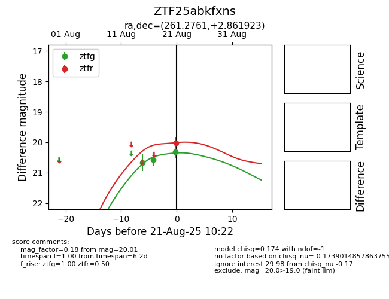

Target ZTF25abkfxns at 2025-08-21 10:22, see:
FINK: fink-portal.org/ZTF25abkfxns
Lasair: lasair-ztf.lsst.ac.uk/objects/ZTF25abkfxns
ALeRCE: alerce.online/object/ZTF25abkfxns
alt names
ZTF25abkfxns (ztf,alerce)
coordinates:
equatorial (ra, dec) = (261.2761,+2.86192)
galactic (l, b) = (25.3821,+20.47172)
photometry
last ztfg=20.31, ztfr=20.01
3 ztfg, 1 ztfr detections
